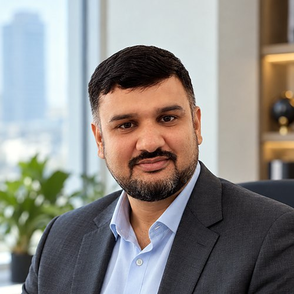
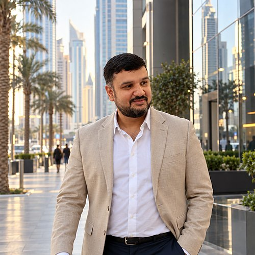
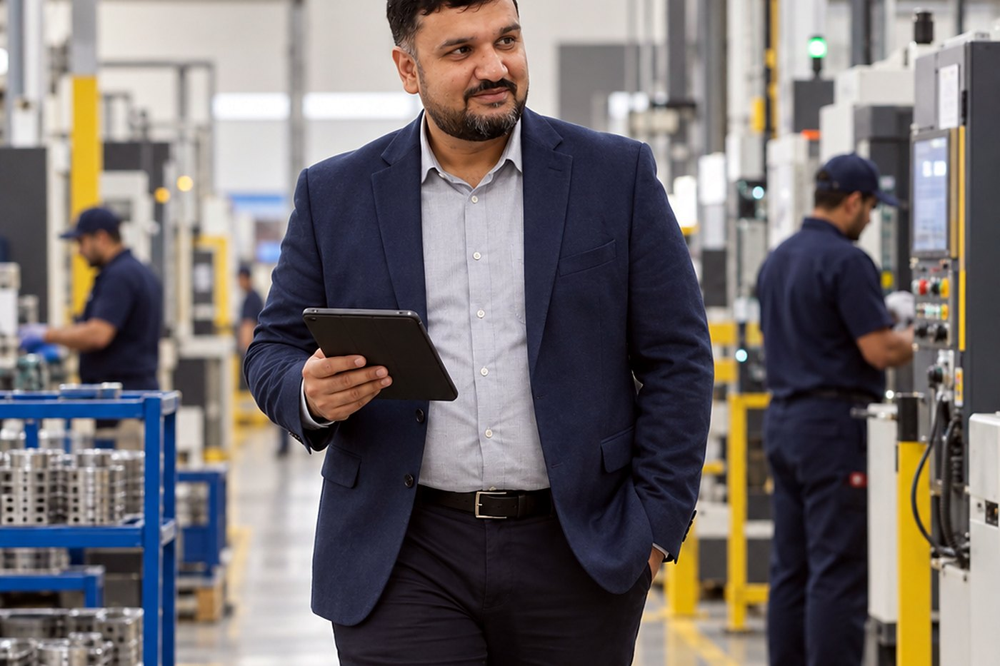
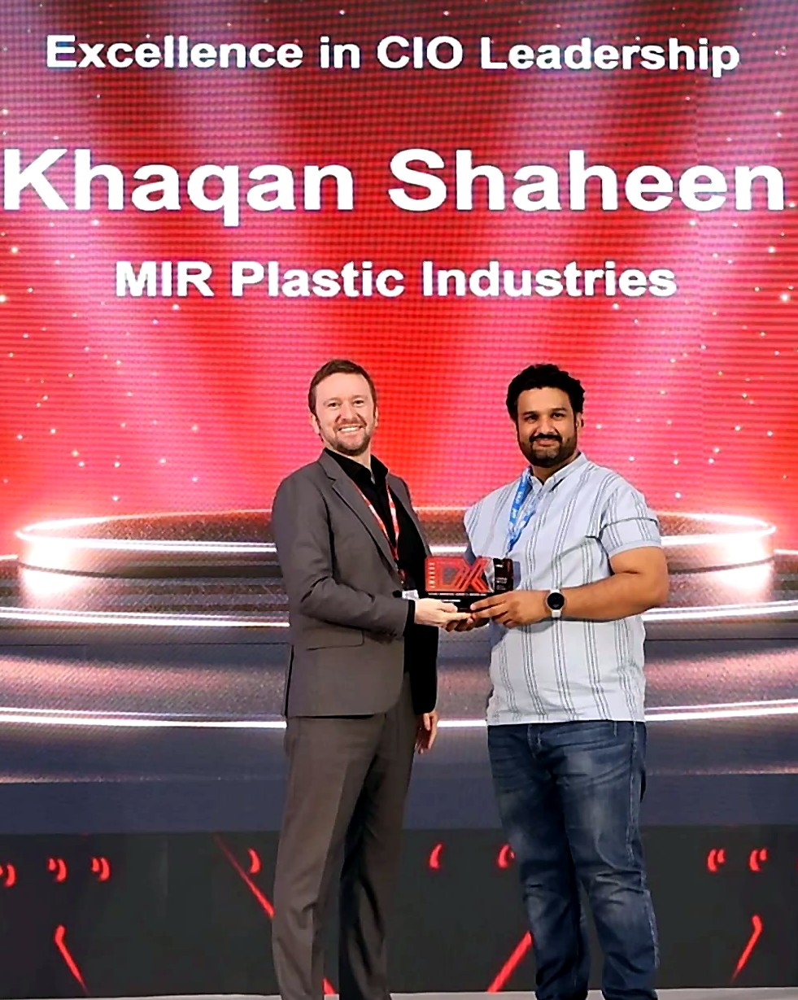
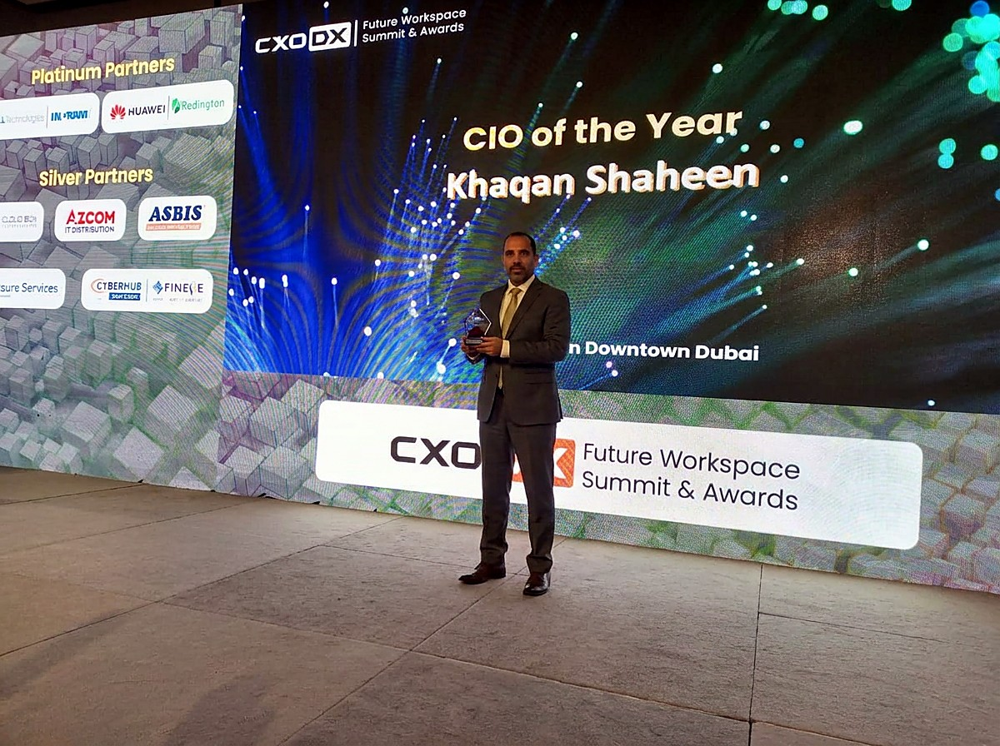
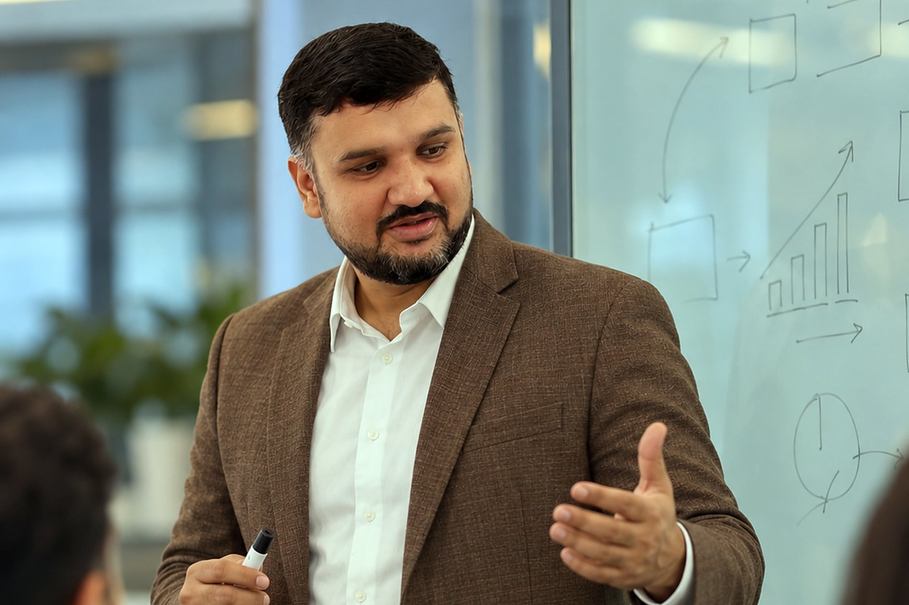

Khaqan Shaheen
My speciality is taking a business from manual and spreadsheet-run operations to one ERP with AI doing the repetitive work. I run the whole technology function for a manufacturing group across six sites in five countries, with five AI systems in daily production.
That means the Odoo ERP every site closes its month on, the servers and security underneath it, and AI that does real work rather than pilots. I help businesses connect ERP and AI workflows, with clear technical ownership and human review. Available for consulting, part-time or fractional Head of IT work, and senior technology leadership roles.
Building and running business systems since 2008. Based in Dubai, United Arab Emirates.


One platform, every site. AI that survives daily use.
One ERP for the whole group
A single Odoo instance covers production, sales, inventory, procurement, accounting, HR and maintenance for six sites in five countries. I implemented it, I own it, and I direct every extension built on it. Machine scheduling with overlap prevention, batch and barcode control, approval workflows and role-specific dashboards were all built to my specification, because the standard package did not reach our plant.
AI in production, not in pilots
Five AI systems run in daily use inside the business: document OCR that reads supplier bills and expense claims straight into the ERP, automated certificate and document verification, a 24 hour sales agent on WhatsApp and the web, an AI voice agent on the corporate telephony, and one chat platform that runs several WhatsApp numbers and the websites from a single place.
Infrastructure, identity and security
The production database went from PostgreSQL 9.5 to 16, eight major versions, with no unplanned downtime at any site. It now sits behind automated backups, point in time recovery, off-site replication and monitoring. Locally held passwords were replaced by Google Workspace single sign on, two factor authentication and role based access. Linux and Nginx, on-premise and across AWS, Google Cloud and DigitalOcean.

- 6sites on one ERP
- 5countries
- 150+users supported
- 5AI systems in production
- 8PostgreSQL major versions, no unplanned downtime
- 2008first web project shipped
Recognised by the region's CIO community
Awards from CXO DX, the UAE technology leadership publication and events organiser, for the ERP and AI transformation work described on this site. Two of them are published under my name on the organiser's own site; the links are below.


- Technology Transformer of the Year, SME Tech Innovation Summit & Awards, Conrad Dubai, 16 February 2023. Listed by the organiser: CXO DX event report.
- IT Leadership Excellence, CIO Connect Summit & Awards, JW Marriott Dubai Marina, 13 May 2024. Listed by the organiser: CXO DX event report.
- Excellence in CIO Leadership, CXO DX awards, Dubai. Pictured above.
- CIO of the Year, CXO DX Future Workspace Summit & Awards, Downtown Dubai. Pictured above.
Award titles are as the organiser printed them. My role is Head of IT; the awards recognise the same work either way.
The other half of the job: I build and market products myself
Alongside corporate IT I have built and run a consumer web platform of my own, end to end, and I own the group's websites and their search and paid marketing. This is where the AI marketing, mobile and watch app, SEO and Google Ads work lives.
AI marketing automation
- An autonomous search and content agent that ships work every hour inside guardrails I set
- An AI video generation pipeline for daily social content
- WhatsApp automation for enquiries, status updates and follow-ups
- Structured data, llms.txt and AI-crawler rules that earned my own site referrals from ChatGPT, Perplexity and Gemini
Mobile and watch apps
- A consumer mobile app with a booking flow, built end to end
- Wear OS watch apps as companions to the platform
- Android apps and PWAs for the group: multi-site biometric attendance and geo-verified security patrol, integrated with the ERP
- iPhone development trained at SAE Institute Dubai, 2010
SEO and AI search visibility
- Technical SEO, schema, sitemaps and Search Console for four corporate brands and my own platform
- A five-layer audit (SEO, AEO, GEO, AIO, SXO) I run every morning, now open source as ai-visibility-audit
- Search and content systems on my own platform, measured in GA4 and Search Console rather than guessed
- Web presence and social media for a national school network, 2012 to 2015
Google Ads and paid marketing
- I run my own platform's Google Ads account: keyword structure, ad groups per service, hard cost-per-click caps, daily budget control
- Conversion tracking wired through GA4 and Ads so every lead is counted
- Paid online marketing for the group's brands
- Google Fundamentals of Digital Marketing, 2023
Where a number would normally sit in this section there is none, on purpose. I publish figures only when I can show how I measured them. Ask me on a call and I will walk you through the dashboards.
Available now: consulting, fixed-scope services, fractional Head of IT, mentoring
Everything I offer is something I have done in production. Fixed scope, the fee sent in writing before you pay, delivery on a written date. On-site in the UAE or remote.
By topic: Odoo ERP consultant in Dubai and the UAE · ERP consultant for UAE manufacturers · from manual and spreadsheets to an ERP with AI · AI automation for business operations · fractional Head of IT in the UAE · AI search visibility audit.
Ten case studies, written for a technical reader
Each one covers the situation, the problem, what I was responsible for, what was built, what went wrong, and what the evidence behind it is. No invented numbers. Where a figure would normally sit, I use scope instead.

Articles, tutorials and working notes
Self-published, from work I have done, none with a number I cannot show you how I measured. Everything I have written, or subscribe by RSS.
Five systems that do a job every day
Most AI conversations in business stall at the pilot. These did not. Each one runs inside a working manufacturing group and is owned, monitored and fixed like any other production system.
- Document OCR into the ERP. Supplier bills and expense claims are read and posted into the system of record instead of being typed in.
- Automated document verification. Certificates and supporting documents are checked automatically before a person has to look at them.
- A 24 hour sales agent on WhatsApp and the web. It answers, captures and qualifies enquiries into the sales pipeline at any hour.
- An AI voice agent on the corporate telephony. Inbound calls on the Grandstream platform are answered and handled by an agent.
- One chat platform for every channel. Several WhatsApp numbers and the group websites are run from a single place.
What I have learned from running these is the material I speak and write about: what an AI system gets wrong when nobody is watching it, how to put a boundary around it, and how to measure whether it is paying for itself.
Since 2008
-
December 2015 to present
Head of IT, Aalmir / MIR Plastic Industries LLC, Sharjah and Dubai
Own the entire IT function for a plastics manufacturing group: six sites in five countries, around 150 users, a team of six plus outsourced developers, reporting directly to the owner. Vendor selection, negotiation and IT purchasing. The full IT setup, from nothing, whenever the group opens a new factory. The group's four brand websites, their search and paid marketing.
-
July 2012 to December 2015
Web Projects Manager and Webmaster, The City School Group Head Office, Lahore
Planned and delivered web projects and managed the web presence and social media for a national school network.
-
January 2012 to August 2012
Webmaster and Project Manager, Infobyte Solutions, Pakistan
Web delivery and project management for client work.
-
August 2009 to 2011
Web and design delivery, All In One Technology, Abu Dhabi
Web and design delivery for an Abu Dhabi technology company.
-
2008 to 2009
Web and graphic design roles, Lahore
Started as a web design intern in July 2008, then design and web roles at Lahore studios before moving to the UAE.
Outside the day job
I run a small technology venture of my own. I built the platform end to end: the web application, the booking flow, the mobile and watch apps, the customer messaging automation, the search and content systems, and the analytics behind them. I run its paid search myself. It exists mainly because it keeps me honest. Running something where I own the outcome, the bill and the mistakes teaches me things a corporate IT budget never will: what a customer actually does on a booking page, what an AI system gets wrong when nobody is watching it, what a deployment pipeline costs you when it silently stops working, and how quickly search traffic answers back when you change one thing. Most of the AI and automation work I now bring into my day job was built and broken there first.
I also teach AI to people who are starting out, and I take paid one-to-one career sessions.
Education and courses
- Bachelor of Arts, University of the Punjab, Lahore, 2009
- Project Management Professional (PMP) course, Al Khawarizmi Institute, Abu Dhabi, 2010 (38 hours)
- iPhone 360 mobile development, SAE Institute Dubai, 2010
- Diploma in Graphics Designing, Brains College, Lahore, 2008
- Google Fundamentals of Digital Marketing, 2023
Tools I publish
ai-visibility-audit
One command that tells you whether ChatGPT, Perplexity, Claude, Gemini and Google AI Overviews can crawl, read and cite your website. It scores a site across five layers (SEO, AEO, GEO, AIO and SXO), checks the robots rules for every major AI crawler, validates llms.txt, and tells you the five fixes worth doing first. One Python file, no dependencies.
It grew out of the five layer audit I run every morning on my own sites. Documentation and download.
Short answers
Is Khaqan Shaheen available for consulting?
Yes. Advisory and fixed-price services in ERP and Odoo, AI in operations, search and AI visibility, Google Ads, apps, IT reviews and new-site IT, on-site in the UAE or remote. Services.
Does he take part-time or fractional work?
Yes. Fractional Head of IT on an agreed number of days a month, and project or task-based work suited to senior experience, delivered outside his employer's hours or by arrangement.
Does he offer career advice?
Yes. Paid live sessions on Google Meet: career strategy, CV and LinkedIn rebuild, interview preparation, engineer to Head of IT mentoring, and AI for beginners. Session plans.
Is he open to senior roles?
Yes. IT Director, Head of IT, or Head of Digital and AI Transformation, in the UAE and internationally, with Australia and New Zealand as priority relocation markets.
Topics I can speak on
- Running one ERP across a multi-country manufacturing group
- AI systems that survive contact with daily operations
- Database migrations nobody notices
- Identity and access for a mid-sized group without an enterprise budget
- Building the IT for a new factory from nothing
- Whether a website is visible to ChatGPT, Perplexity and Google AI Overviews
- Running Google Ads with hard cost caps for a small business
- Running IT for the Gulf and South Asia from Dubai
Available for panels, podcasts, guest articles and press comment. Bios, a headshot and a fact sheet are in the press kit.
Email or message me on LinkedIn. Dubai time, GMT+4.